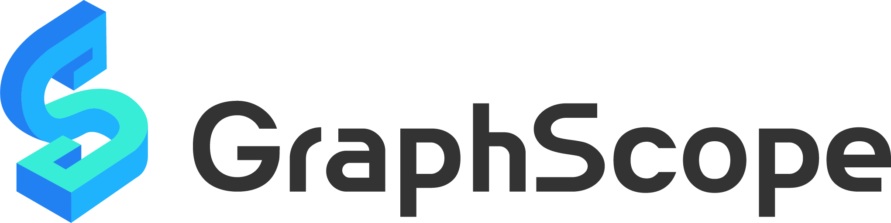

GraphScope
Background
What is graph computing
Graph computing: a foundation for the next generation of artificial intelligence
Challenges of graph computing
GraphScope: a one-stop large-scale graph computing system
Introduction
Architecture overview
Components
GIE: a parallel interactive engine for graph traversal
GAE: a high-performance graph analytics engine
GLE: an end-to-end graph learning framework
Vineyard: an in-memory immutable data manager
Case study: anti-fraud and risk control
The future of GraphScope
Conclusion
Get the book
GraphScope

A One-Stop Large-Scale Graph Computing System from Alibaba
White paper
Download the PDF
.